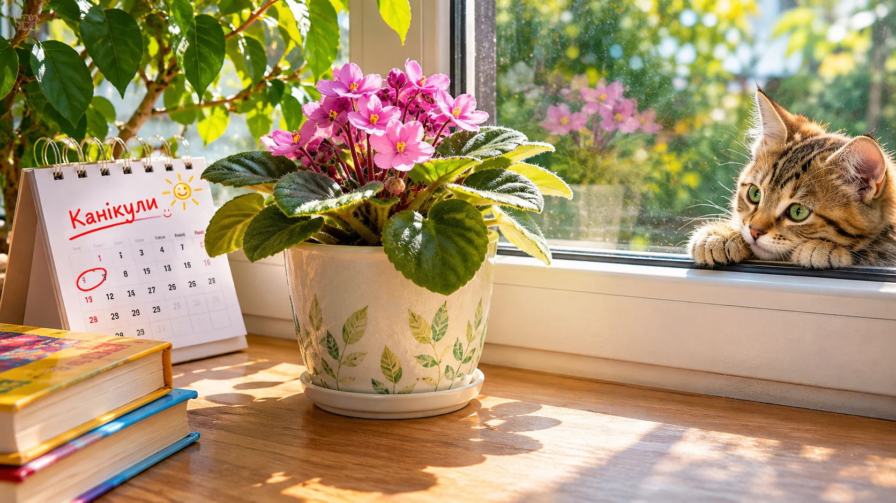

🌱 Вазон під час канікул
Історія 4. Додаємо властивості предметів.
🎯 Ситуація

Клас їде на канікули, а на підвіконні залишається вазон. Вода потрібна рослині щодня, проте ніхто не прийде її поливати. Поруч є вода, тканина й пляшка.
❓ Ваше завдання
Спочатку назвіть ІКР: рослина отримує воду потроху без людини. Тепер дослідіть властивості: що вбирає воду, що її утримує, а що пропускає краплями?
🧩 Спробуйте!
Оберіть дві ідеї, які наближають до бажаного результату. Перетягніть картки або натисніть на них. Поясніть свій вибір.
🧺 Обрано: ще немає
✏️ Ваш винахід
Яку властивість тканини, пляшки або ґрунту Ви використаєте? Опишіть, як рослина отримуватиме воду.